Кастомизация, добавление navbar и пагинации
В рамках данного этапа работы были реализованы следующие ключевые компоненты интерфейса:
- Я создала общий шаблона design.html
Для унификации стилей и структуры страниц.
design.html
<!DOCTYPE html>
<html lang="ru">
<head>
<meta charset="UTF-8">
<meta name="viewport" content="width=device-width, initial-scale=1">
<title>{% block title %}Главная страница{% endblock %}</title>
<link href="https://stackpath.bootstrapcdn.com/bootstrap/4.5.2/css/bootstrap.min.css" rel="stylesheet">
{% load static %}
<link href="{% static 'style.css' %}" rel="stylesheet">
</head>
<body>
<nav class="navbar navbar-expand-lg navbar-light" style="background-color: #e6e7e8;">
<div class="container d-flex align-items-center">
<a class="navbar-brand d-flex align-items-center" href="{% url 'main' %}">
<img src="{% static 'logo.png' %}" alt="Логотип" class="logo">
Научные конференции
</a>
<button class="navbar-toggler" type="button" data-toggle="collapse" data-target="#navbarNav" aria-controls="navbarNav" aria-expanded="false" aria-label="Toggle navigation">
<span class="navbar-toggler-icon"></span>
</button>
<div class="collapse navbar-collapse justify-content-end" id="navbarNav">
<ul class="navbar-nav align-items-center" style="font-size: 1em;">
{% if user.is_authenticated %}
<li class="nav-item mr-3">
<span class="navbar-text">Приветствуем, {{ user.username }}!</span>
</li>
{% endif %}
<li class="nav-item mr-3">
<a class="nav-link" href="{% url 'main' %}">Главная</a>
</li>
<li class="nav-item mr-3">
<a class="nav-link" href="{% url 'conference_list' %}">Конференции</a>
</li>
<li class="nav-item mr-3">
<a class="nav-link" href="{% url 'all_participants_list' %}">Участники</a>
</li>
{% if user.is_authenticated %}
{% if user.is_staff %}
<li class="nav-item mr-3">
<a class="nav-link" href="{% url 'user_dashboard' %}">Мои конференции</a>
</li>
<li class="nav-item mr-3">
<a class="nav-link" href="/admin/">Редактировать конференции</a>
</li>
{% else %}
<li class="nav-item mr-3">
<a class="nav-link" href="{% url 'user_dashboard' %}">Мои конференции</a>
</li>
{% endif %}
<li class="nav-item mr-3">
<form method="post" action="{% url 'logout' %}" class="m-0 p-0">
{% csrf_token %}
<button type="submit" class="btn btn-link nav-link" style="font-size: 1em;">Выйти</button>
</form>
</li>
{% else %}
<li class="nav-item mr-3">
<a class="nav-link" href="{% url 'register' %}">Регистрация</a>
</li>
<li class="nav-item">
<a class="nav-link" href="{% url 'login' %}">Войти</a>
</li>
{% endif %}
</ul>
</div>
</div>
</nav>
<div class="container my-4">
{% block content %}{% endblock %}
</div>
<footer class="footer">
<div class="container text-center">
<span>© 2024 Научные конференции. Все права защищены.</span>
</div>
</footer>
</body>
</html>
С использованием Bootstrap 4.5.2 я реализовала меню навигации. Также на странице списка конференций, я добавила пагинацию и поиск. conference_list.html:
<{% extends "design.html" %}
{% block title %}Список конференций{% endblock %}
{% block content %}
<div class="container my-4">
<h1 class="text-center mb-4">Список конференций</h1>
{% if messages %}
<div class="alert alert-success">
{% for message in messages %}
{{ message }}
{% endfor %}
</div>
{% endif %}
<form method="get" action="{% url 'conference_list' %}" class="form-inline justify-content-center mb-3">
<input type="text" name="q" class="form-control mr-2" placeholder="Поиск конференций" value="{{ request.GET.q }}">
<button type="submit" class="btn btn-outline-primary search">Поиск</button>
</form>
<div class="row justify-content-center">
{% for conference in conferences %}
<div class="col-md-6 mb-4">
<div class="card conference-card">
<div class="card-body">
<h5 class="card-title">{{ conference.title }}</h5>
<p class="card-text"><strong>Темы:</strong> {{ conference.themes }}</p>
<p class="card-text"><strong>Место проведения:</strong> {{ conference.location }}</p>
<p class="card-text"><strong>Период:</strong> {{ conference.start_date }} - {{ conference.end_date }}</p>
<p class="card-text">{{ 307080conference.description|truncatewords:20 }}</p>
<a href="{% url 'conference_detail' conference.pk %}" class="btn btn-info">Подробнее</a>
</div>
</div>
</div>
{% empty %}
<p>Конференции не найдены.</p>
{% endfor %}
</div>
<div class="custom-pagination d-flex justify-content-center mt-4">
<nav aria-label="Page navigation">
<ul class="pagination d-flex">
{% if page_obj.has_previous %}
<li class="page-item mx-2">
<a class="page-link custom-page-link" href="?page=1{% if query %}&q={{ query }}{% endif %}">
Первая страница
</a>
</li>
<li class="page-item mx-2">
<a class="page-link custom-page-link" href="?page={{ page_obj.previous_page_number }}{% if query %}&q={{ query }}{% endif %}">
Предыдущая страница
</a>
</li>
{% endif %}
{% if page_obj.has_next %}
<li class="page-item mx-2">
<a class="page-link custom-page-link" href="?page={{ page_obj.next_page_number }}{% if query %}&q={{ query }}{% endif %}">
Следующая страница
</a>
</li>
<li class="page-item mx-2">
<a class="page-link custom-page-link" href="?page={{ paginator.num_pages }}{% if query %}&q={{ query }}{% endif %}">
Последняя страница
</a>
</li>
{% endif %}
</ul>
</nav>
</div>
</div>
{% endblock %}
Реализованные страницы:
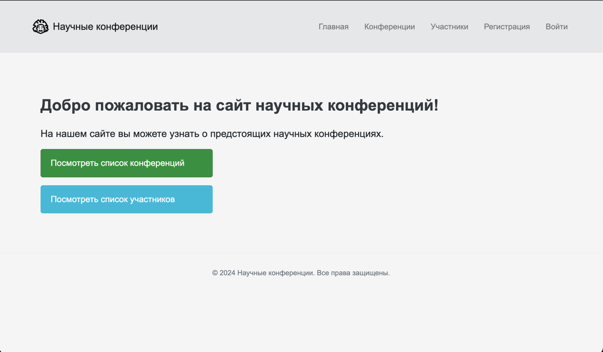
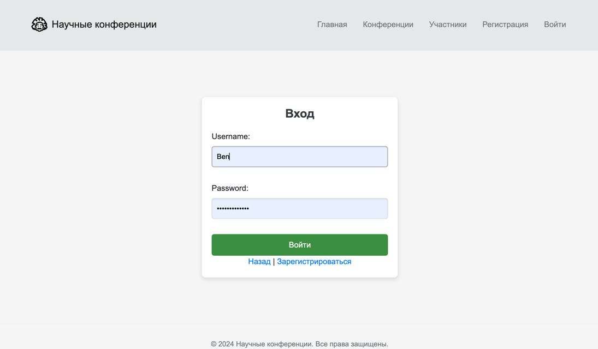
 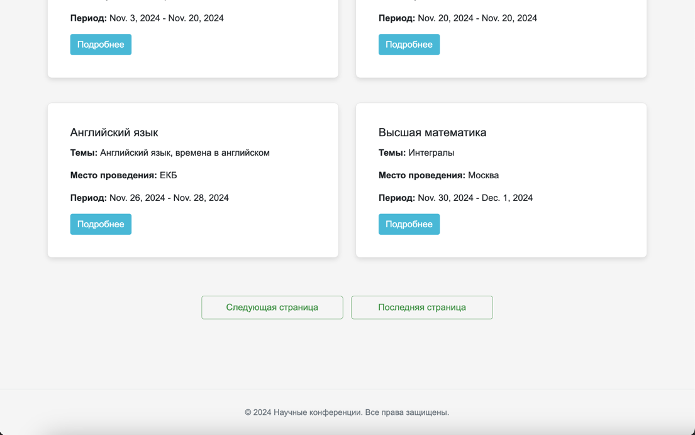
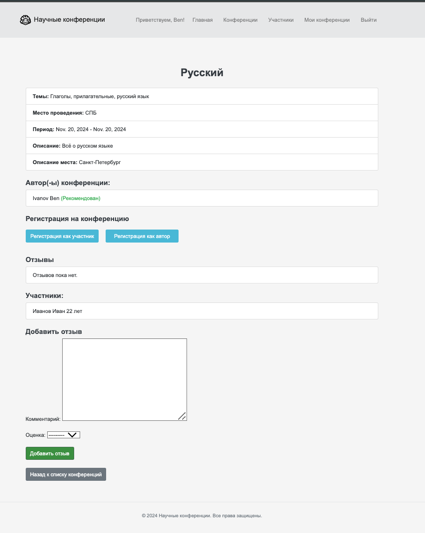
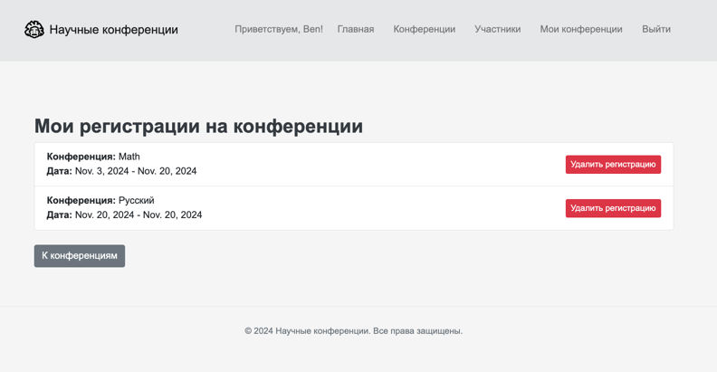
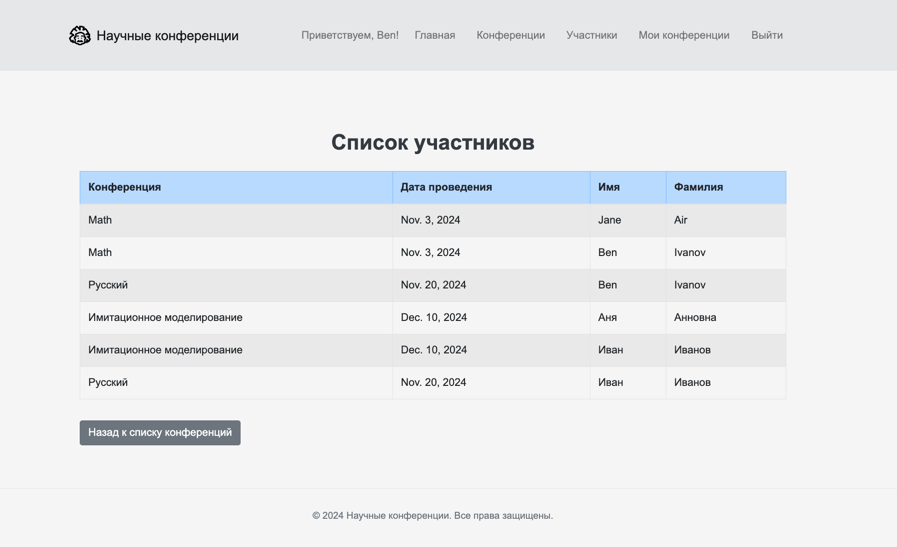
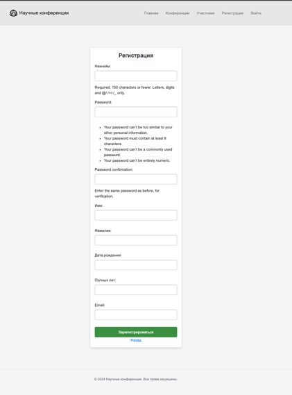
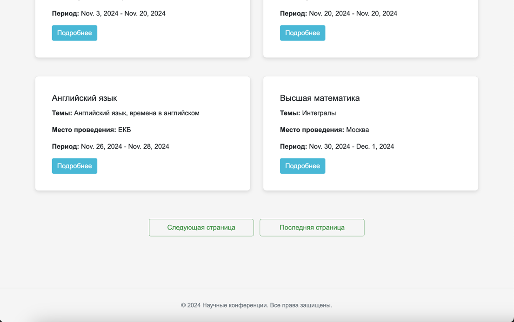
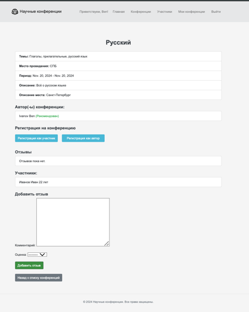
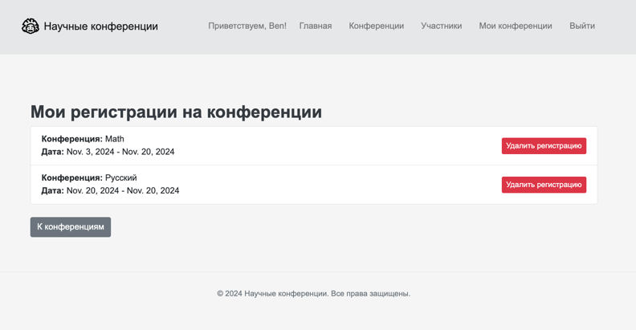
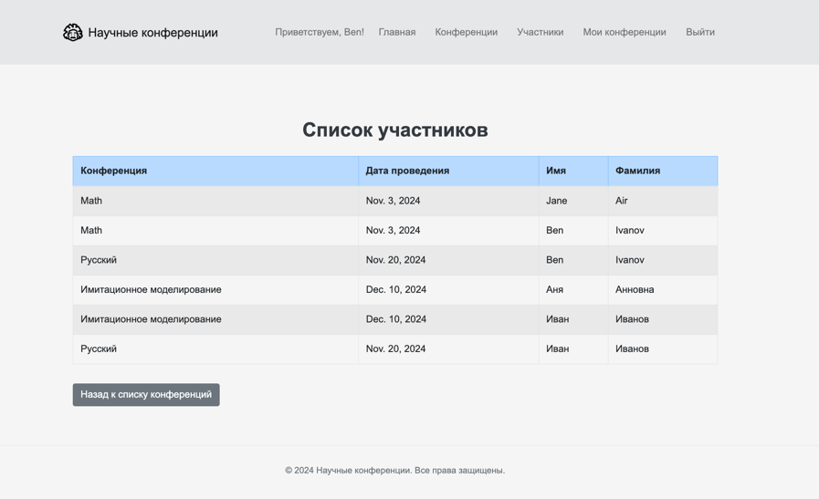
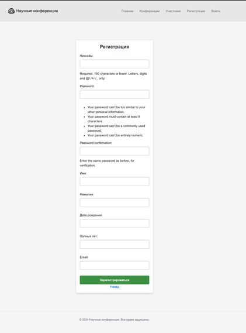
Также, если пользователь является админом, то его меню выглядит так:
 Здесь пользователь может перейти в панель django-administration, и, соответственно вносить необходимые правки или подтверждать (рекоммендовать) автора.
Здесь пользователь может перейти в панель django-administration, и, соответственно вносить необходимые правки или подтверждать (рекоммендовать) автора.